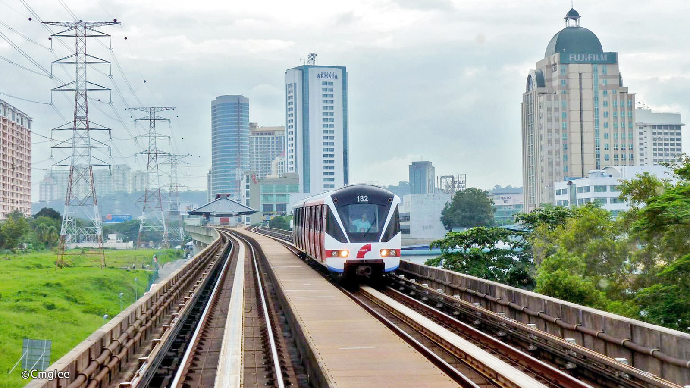
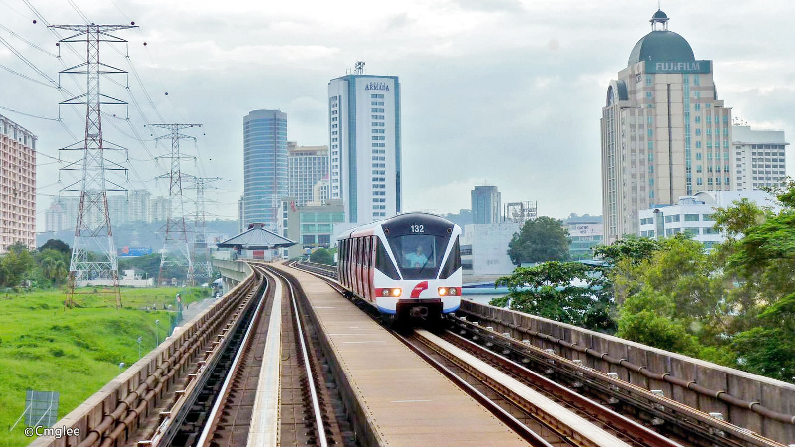

Petaling Jaya (commonly called "PJ" by locals) is a major Malaysian city originally developed as a satellite township for Kuala Lumpur. It is located in the Petaling District of Selangor with an area of approximately 97.2 square kilometres (37.5 sq mi). Petaling Jaya was granted city status on 20 June 2006.
Petaling Jaya is surrounded by the Malaysian capital, Kuala Lumpur to the east, Sungai Buloh to the north, Shah Alam , the capital of Selangor and Subang Jaya to the west and Bandar Kinrara (Puchong) to the south.
Petaling Jaya is a place that have a lots of delicious foods and desserts
read more